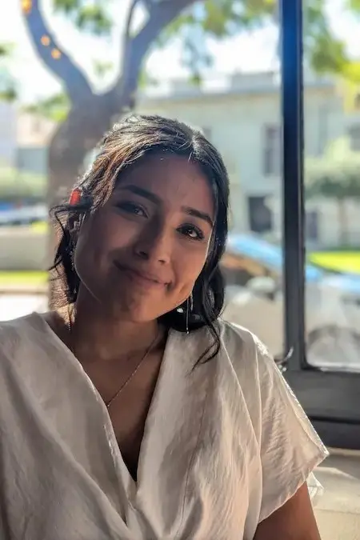

Home
About me
Hello! My name is Margarita Wendt and I am from Buenos Aires, Argentina. I got married a few months ago and currently live in Germany. I like hanging out with my friends and drinking mate. I'm currently studying web and computer programming. I'm excited about the skills I'll develop here.
Student Photo
Web Certificate Courses
ALL
CSE
WDD
WDD 130
WDD 131
WDD 231
The total credits for course listed above is 6